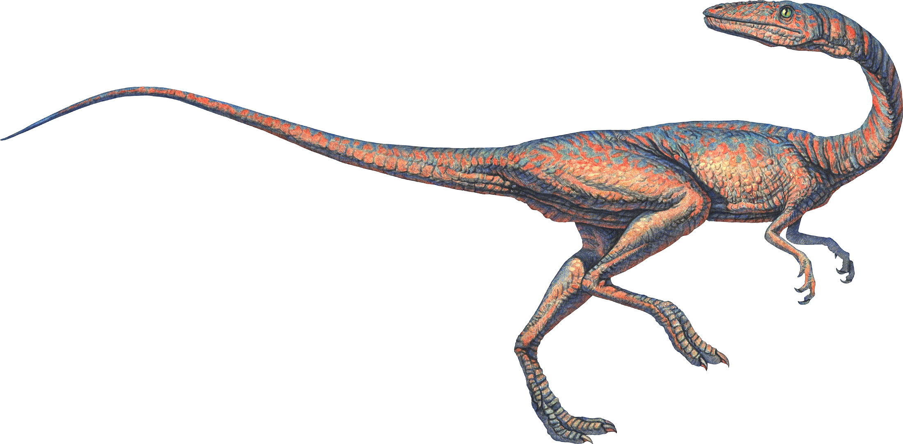
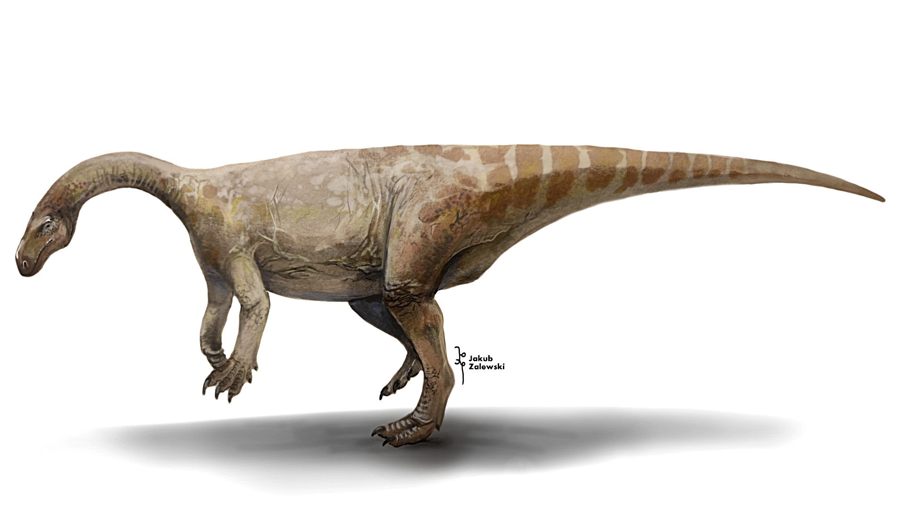
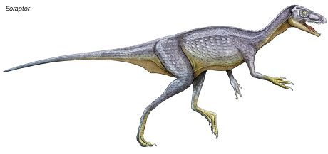
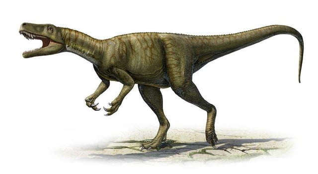
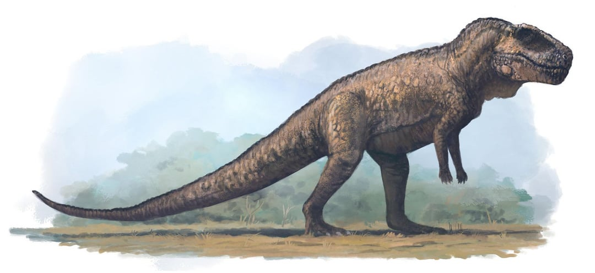

The Triassic Period
The Triassic Period, lasting from about 252 to 201 million years ago, is the first period of the Mesozoic Era, following the largest mass extinction event in Earth's history—the Permian-Triassic extinction. This extinction event wiped out most life forms, leaving the planet in a state of recovery. The Triassic marks the beginning of life’s resurgence, particularly the rise of reptiles, including the first dinosaurs. During this period, the supercontinent Pangaea began to break apart, and Earth's climate was generally warm and dry, with vast deserts dominating much of the land. Shallow seas surrounded Pangaea, creating rich marine ecosystems. This period set the stage for the eventual dominance of dinosaurs, along with the rise of mammals and other significant life forms.
The Triassic Period saw the emergence of many early dinosaur species, but these creatures were generally small compared to their later Mesozoic successors. These dinosaurs began to diversify into herbivores and carnivores, and their adaptation to the changing environments was crucial for their survival. The period ended with another extinction event, leading to the rise of more advanced dinosaur species in the subsequent Jurassic.
Coelophysis
Coelophysis is one of the earliest known dinosaurs, living during the Late Triassic around 225 million years ago. This small, bipedal carnivore measured about 3 meters (10 feet) long and had a slender body, long tail, and sharp teeth, making it an agile and fast predator. Coelophysis is believed to have hunted smaller animals, possibly scavenging or preying on invertebrates and small vertebrates. Fossils of Coelophysis have been found in North America and South Africa, indicating that it lived in floodplain environments, often in herds. Its discovery has provided valuable insights into the early development of theropod dinosaurs.
Plateosaurus
Plateosaurus was one of the earliest herbivorous dinosaurs, living during the Late Triassic around 214 to 204 million years ago. Growing to about 8 meters (26 feet) in length, Plateosaurus had a long neck, a small head, and a bulky body, which allowed it to feed on plants, particularly ferns and conifers. It is considered one of the best-known dinosaurs of the period, with fossils found primarily in Europe, particularly in what is now Germany and Switzerland. Plateosaurus was one of the first large herbivores, and its fossils have helped paleontologists understand the early evolution of plant-eating dinosaurs.
Eoraptor
Eoraptor is one of the oldest known dinosaurs, believed to have lived around 231 million years ago during the Early Triassic. This small, lightweight, carnivorous dinosaur measured about 1 meter (3 feet) long and had a mix of primitive features. Eoraptor is considered an early ancestor of both theropod and sauropodomorph dinosaurs. Its diet may have been opportunistic, feeding on smaller animals or plants depending on availability. The discovery of Eoraptor has been crucial in understanding the early stages of dinosaur evolution, as it shows characteristics shared by both herbivorous and carnivorous lineages. Fossils of Eoraptor have been found in what is now Argentina, providing important evidence of early dinosaur life.
Herrerasaurus
Herrerasaurus was a large carnivorous dinosaur that lived during the Late Triassic, approximately 231 million years ago. It measured up to 6 meters (20 feet) in length and had a long tail and sharp teeth. Herrerasaurus had features typical of early theropods and is considered one of the earliest members of this group. Its large size and powerful build suggest that it was one of the top predators in its environment, hunting smaller vertebrates and possibly scavenging for food. Fossils of Herrerasaurus have been found primarily in South America, particularly in Argentina. Its discovery has been essential in understanding the early evolution of theropod dinosaurs and the development of carnivorous dinosaur traits.
Postosuchus
Postosuchus, though not actually a dinosaur, was a large archosaur closely related to the ancestors of dinosaurs. It lived around 220 million years ago during the Late Triassic. This carnivorous predator grew up to 4.5 meters (15 feet) long and had a large, powerful build, making it one of the dominant predators of its time. Postosuchus had a crocodile-like skull and strong limbs, which allowed it to hunt smaller vertebrates and early dinosaurs. Fossils of Postosuchus have been found in what is now North America, particularly in the southwestern United States. Its role as a top predator in the Triassic ecosystem provides valuable insight into the early dynamics of prehistoric food chains before dinosaurs fully dominated terrestrial ecosystems.